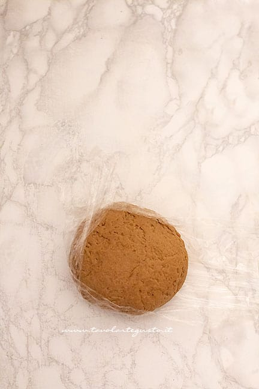
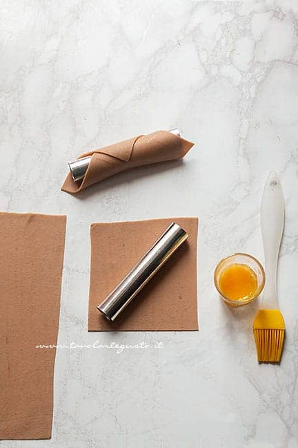
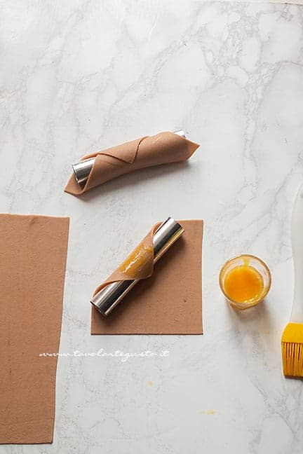
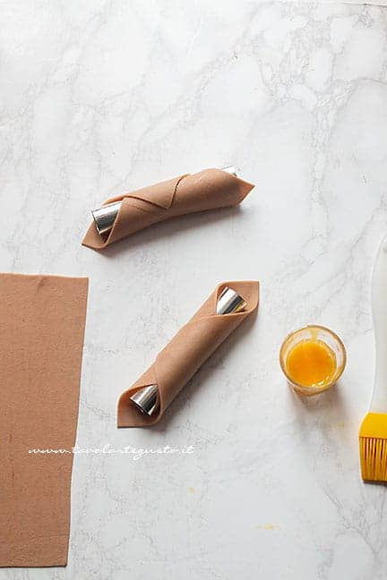
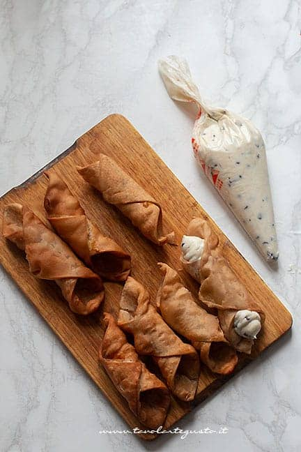
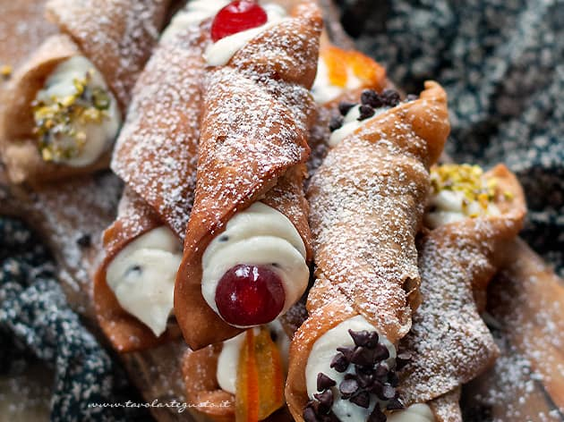

Il Cannolo siciliano risale ai tempi alla dominazione araba in Sicilia (dal 827 al 1091) nati dalle
mani delle suore di un convento nei pressi di Caltanissetta; inizialmente preparati in occasione del Carnevale.
Ben presto si diffusero in tutta la Italia, diventando il dolce da preparare in tutte le occasioni.
Oggi sono uno dei dolci più importanti della cultura Siciliana.
Ricetta
| Difficoltà | Media |
| Tempo di preparazione | 60 Minuti |
| Tempo di cottura | 10 Minuti |
| Porzioni | 16 Pezzi |
| Metodo di cottura | Forno |
| Cucina | Italiana (Sicilia) |
Ingredienti
Per la scorza
- 250g Farina 00 + un pò per spolverare
- 50g Zucchero semolato
- 30g Strutto (in alternativa burro morbido)
- Vaniglia (1 bustina oppure 1 cucchiaio di estratto)
- 3g Sale
- Olio per friggere
- 1 cucchiaino raso di Cacao amaro in polvere
- 1 bicchierino di Marsala (circa 60 gr)
- un cucchiaio di Aceto di vino bianco
- Cannella in polvere
Per il ripieno
- 800g Ricotta di pecora perfettamente sgocciolata
- 300g Zucchero semolato
- 120g Gocce di cioccolato fondente
Per decorare
- Zucchero a velo
- Granella di pistacchi
- Arancia candita
- Gocce di cioccolato
- Ciliege candite
Preparazione del Cannolo Siciliano
Ripieno
Prima di tutto, realizzate la crema di ricotta.
Sgocciolate la ricotta alla perfezione, strizzandola in un canovaccio di tela. Trasferite la ricotta asciutta
in una ciotola, aggiungete lo zucchero, frullate con un minipimer, in modo da ottenere un composto cremoso e vellutato senza grumi.
Aggiungete le gocce di cioccolato. Girate e riponete in frigo per almeno 4 – 5 h.
Cialda
Lavorate con le fruste lo strutto, la vaniglia, la cannella, il sale e lo zucchero, fino ad ottenere un composto spumoso.
Aggiungete l’uovo, lavorate ancora con le fruste per amalgamare il tutto.
Poi aggiungete la farina precedentemente setacciata con cacao, a poco alla volta alternandola con vino e marsala. Fino ad
esaurimento ingredienti e fino a raggiungere un impasto lavorabile e compatto, se necessario spolverate con un pizzico di farina.
Sigillare con una pellicola e lasciate riposare in frigo per almeno 1 h.

Realizzare la forma del Cannolo
Trascorso il tempo indicato, dividete l’impasto in 3 – 4 parti.
Stendetelo sottilissimo ad uno spessore di 2 – 3 mm con l’aiuto di una macchinetta della pasta.
Dovrete procedere ripiegando l’impasto su se stesso più volte, con aggiunta di farina
fino ad ottenere una sfoglia compatta e che non attacca più.
Se non avete la macchinetta della pasta, potete procedere a mano con un mattarello, ci vorrà più tempo e più fatica
per assottigliare la sfoglia.
Dividete la sfoglia in quadrati di circa 10 x 10 cm. Attenzione che la misura del quadrato dev’essere grande come il cilindro di alluminio; non deve uscire fuori, altrimenti dopo cotto, avrete difficoltà a sfilarlo.
Se state usando dei cilindri più piccoli, naturalmente realizzerete dei quadrati di 7 – 8 cm .
Posizionate al centro di ogni quadrato il cilindro.

Pennellate con il resto dell’uovo sbattuto.

Sigillate il cannolo, accoppiando l’altro lembo sull’uovo.
Realizzate in questo modo tutte le scorze dei vostri cannoli siciliani.
Ponete in frigo per almeno 1 ora.
Questo passaggio in frigo è fondamentale. I cilindri devono risultare freddi per reggere l’elevata temperatura della frittura.

Cottura delle Scorze
Caldate l’olio per friggere in un pentolino a bordi alti, friggete una cialda per volta.
Basterà 1 minuto circa, girandola un paio di volte. Vedrete che salirà subito a galla riempiendosi di bolle.
Scolate su carta assorbente ed eliminate subito la cannula. Se aspettate troppo tempo resteranno incastrate.
Lasciate quindi raffreddare le cialde pronte e cuocete tutte le altre.
Quando le cialde sono pronte, riempite i cannoli con la crema di ricotta e gocce di cioccolato. Prima un lato, poi un altro.

Decorazione
Completate aggiungendo sulle punte di crema la granella di frutta secca, gocce di cioccolato, scorze di arancia candita, ciliegie candite. Spolverate di zucchero a velo e servite

Conservazione
In frigorifero per 1 giorno se sono già farciti.
Il mio consiglio è di realizzare le cialde, lasciarle a temperatura ambiente e riempire con la crema solo quando
decidiate di servire i vostri cannoli.
Una volta riempiti, le cialde dopo 1 giorno, tendono ad ammorbidirsi.